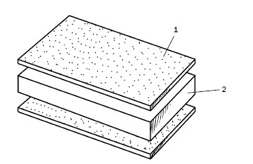

Возведение стен по канадской технологии.

В настоящее время разработано немало технологий, которые применяются при строительстве домов, в том числе и индивидуальных. В современной России популярны дома, построенные по так называемой канадской технологии. Поскольку существуют некоторые расхождения в понимании того, какие именно конструкции относятся к данной технологии, постараемся внести в этот вопрос ясность. Нередко «канадскими» называют обычные каркасные или каркасно-щитовые дома, которые в нашей стране возводят уже не один десяток лет. «Канадскими» мы будем называть только те из них, в постройке которых используются SIP-панели. (Кстати, название «канадская технология» распространено в России и Украине. Если быть точными, то ее скорее следует назвать американской, так как первую панель изготовили в США. В западных странах данный способ строительства технологией не называют, именуя его «building with SIPs», что переводится как «строительство с использованием SIP-панелей». Мы же для удобства сохраним название «канадская технология».)
SIP-панель – Structural Insulated Panel – «конструкционная теплоизолированная панель» (КТП). Данная панель (ее называют и сандвич-панелью) – это монолитная трехслойная конструкция (рис. 121), образованная двумя ориентированно-стружечными плитами OSB-3, между которыми находится пенополистирол, вклеенный под давлением и выступающий в роли утеплителя.

Рис. 121. SIP-панель (размеры указаны в миллиметрах): 1 – плита OSB-3; 2 – пенополистирол
Монолитное склеивание элементов SIP-панелей позволяет им противостоять вертикальной нагрузке в 18 т при ширине панели 1250 мм. Максимальная поперечная нагрузка, на которую рассчитана панель размером 3 м , составляет 2,5 т. На Западе из таких панелей разрешается строительство пятиэтажных зданий, у нас – только домов в 2 этажа с мансардой.
Панели имеют следующие размеры:
1) длина – 2500, 2800, 3000 мм;
2) ширина – 1250 мм;
3) толщина – 68–224 мм.
Теплоизоляционные параметры представлены для конструкций с толщиной утеплителя 150 мм для средней полосы России:
1) толщина плиты OSB-3 – 120 мм;
2) коэффициент теплоотдачи внутренней поверхности стены – 8,7 Вт/м ?°С;
3) коэффициент теплоотдачи наружной поверхности стены – 23 Вт/м ?°С;
4) коэффициент сопротивления теплоотдачи панели – 3,95 Вт/м°С.
Поскольку SIP-панели монтируются с помощью деревянного бруса (это наиболее распространенный способ их сборки, хотя и не единственный), то внутри стен создается жесткий каркас, который, будучи усилен раскосами, прекрасно противостоит нагрузкам, сообщаемым ему вышележащими конструкциями. Исходя из этого, SIP-технологию часто причисляют к каркасным.
Но необходимо сказать, что такие панели и без каркаса выдерживают различные нагрузки, в том числе осевую сжимающую от веса постройки, поперечную ветровую. Панели настолько прочные, что из них строятся и многоэтажные дома. Отличительная особенность SIP-панели состоит в том, что она выполняет функции не только утепления, но и силовых элементов конструкции: стен, перекрытий, крыши. Поэтому канадскую технологию нередко именуют бескаркасной. Действительно, SIP-панели не нуждаются в каркасе, поскольку дома монтируются и без него посредством шпонок из OSB-3 или термовставок, которые изготавливаются из SIP-панелей меньшей толщины.
Так как SIP представляет собой панель, то SIP-технологию с равным успехом можно отнести и к панельному домостроению (кстати, оснований для этого много, поскольку отдельно каркас не возводится, его функции выполняют верхний и нижний обвязочные брусья панелей, а сами они представляют собой несущий элемент конструкции). Но панели можно использовать не только в качестве частей или всей силовой конструкции дома, но и в роли межкомнатных перегородок, для утепления стен и обшивки каркаса.
После того как снята проблема терминологии, необходимо остановиться на достоинствах и недостатках данной технологии, причем первые мы рассмотрим с точки зрения комфорта, экономичности и технологичности, хотя в конечном итоге все сводится к материальным затратам, ведь создать удобные для жизни условия можно в доме любой конструкции. Очень важно, сколько времени и средств потребует строительство и во сколько будет обходиться эксплуатация дома в последующем.
1. Главный плюс домов, построенных по канадской технологии, заключается в том, что в них тепло. И затраты, посредством которых это достигается, достаточно малы, особенно по сравнению с кирпичными домами. Чтобы уровень теплопотерь был как у «канадских», последние должны иметь толщину стен 2,5 м.
2. Дом из SIP-панелей может при толщине стен 150 мм соответствовать требованиям средней полосы России, тогда как от бруса требуется толщина стен 200 мм, а от кирпича 500 мм.
3. Уникальная конструкция сандвич-панелей позволяет значительно снизить толщину стен, и в результате возрастает полезная площадь помещений. Сравните следующие данные: толщина стен из SIP-панелей составляет 174 мм, из кирпича (при укладке в 2 кирпича) – 510 мм, из пенобетона – 450 мм; при постройке дома 10 x 10 м площадь помещений составит 92,12; 80,64; 82,81 м соответственно.
4. В домах из SIP-панелей за счет относительно тонких стен улучшена освещенность. Чтобы добиться такого же эффекта в домах с толстыми стенами, необходимо увеличить площадь остекления, что обернется как удорожанием строительства, так и теплопотерями.
5. Дом, построенный по канадской технологии, прогревается очень быстро (особенно по сравнению с кирпичным) благодаря незначительной теплоемкости стен и дольше сохраняет тепло, так как стены обладают низкой теплопроводностью. А летом в таких домах прохладно.
6. Поскольку в роли утеплителя выступает пенополистирол, то стены отличаются высоким шумопоглощением, т. е. в таком доме тихо.
7. Пенополистирол негигроскопичен, поэтому панели с таким утеплителем не требуют дополнительной гидроизоляции.
8. Пенополистирол выгодно отличается от минеральной ваты целым рядом параметров, в частности теплопроводностью (0,027–0,040 Вт/м°С), плотностью (15–40 кг/м ), прочностью на сжатие (65–2540 КПа). У минваты прочность ниже, теплопроводность выше, она может постепенно накапливать влагу, проседать под тяжестью своего веса, что приводит к образованию мостиков холода.
9. Немаловажным достоинством «канадского» дома является его небольшой вес, в частности 1 м стены весит 15–20 кг. Естественно, это положительным образом отражается на фундаменте, так как снижает расходы на его устройство. Как правило, под SIP-панели закладывается мелкозаглубленный ленточный или столбчатый фундамент. Это особенно существенно при строительстве на сложных грунтах.
10. Возведение стен по канадской технологии обойдется дешевле всего, потому что, во-первых, снижены транспортные расходы (например, весь комплект дома площадью 150 м , который весит примерно 20 т, будет доставлен двумя фурами и разгружен вручную), во-вторых, нет необходимости в тяжелой спецтехнике: 3–4 человека соберут стены за 7–12 дней.
11. Из предыдущего пункта вытекает и данный – экономия времени. Своими силами построить кирпичный дом нельзя даже за год, канадский же будет полностью готов через 2–4 месяца, т. е. за один сезон.
12. Стены, возведенные из SIP-панелей, абсолютно ровные и не меняются ни при каких внешних воздействиях. Названное качество панелей положительно сказывается и на отделке, поскольку на это потребуется меньше времени, ведь их не придется выравнивать, и денег, так как не надо будет приобретать шпатлевку и иные отделочные материалы. Если захочется оформить их гипсокартоном, то для его крепления не понадобятся даже металлические профили.
13. Дом из SIP-панелей можно отделывать непосредственно после завершения строительства, так как он не требует времени для осадки. Практически нет отделочных материалов, которые нельзя было бы применить для оформления дома из SIP-панелей. Для наружной отделки подойдут сайдинг, декоративная штукатурка, кирпич, термопанели и др. Для внутренней – вагонка, обои, пробковое покрытие, плитка и пр.
14. Для монтажа панелей не требуется применять никакого сложного оборудования, инструмента и приспособлений: нужны только саморезы, шуруповерт, монтажная пена, ножовка, перфоратор, циркулярная пила, электролобзик, «болгарка» и т. п.
15. Строительство из SIP-панелей возможно независимо от времени года.
16. В процессе эксплуатации постройки расходы на отопление и кондиционирование меньше примерно в 5–6 раз по сравнению с домами других конструкций. Благодаря экономии на отопление дом из SIP-панелей окупается в течение 10 лет.
17. Собрать дом из SIP-панелей можно без привлечения наемных рабочих, что также немаловажно с точки зрения экономии средств. Кроме того, это выгодно отличает данную конструкцию от обычной каркасной. Весь монтаж состоит в том, что по периметру основания прикрепляется направляющая доска, устанавливаются две угловые панели и присоединяются одна к другой. Отсюда сокращение расходов на устройство каркаса, ведь часть нагрузки панель берет на себя; уменьшение количества мостиков холода и, следовательно, повышение теплоизоляционных показателей стены (пенополистирол толщиной 150 мм заменяет минеральную вату толщиной 200 мм).
18. Поскольку утеплитель фиксируется по всей поверхности OSB-3, то не возникает проблем с усадкой утеплителя, характерной для каркасных конструкций.
19. Панельное строительство очень технологично и поэтому удобно и выгодно для промышленного производства. Кроме того, все детали комплектуются на заводе и поэтому не требуют подгонки при монтаже, что опять-таки сокращает сроки строительства. Конечно, за это придется заплатить значительную сумму, поскольку полный комплект – это эксклюзивный товар, который не производится на конвейере, отсюда и его высокая себестоимость. Но с раскроем панелей можно без труда справиться и самостоятельно, так как этот материал легко пилится электролобзиком, электрофрезером и простой ножовкой. Проемы под окна и двери при необходимости можно вырезать буквально в любой момент строительства и эксплуатации. При заказе панелей можно указать размеры проемов и заказать оконные и дверные блоки еще до того, как будет построен дом.
20. Панели не создают проблем при прокладке инженерных коммуникаций.
21. Панели отличаются легкостью и прочностью, поэтому обычное разделение стен на несущие и ненесущие применительно к этому материалу несколько стирается. Если в кирпичном доме от несущих стен зависит планировка этажей, то в «канадском» она может быть свободной и корректировать ее можно, если потребуется, даже в ходе строительства. Для архитекторов это отличная возможность подойти к работе творчески. Но следует признать, что они редко этим пользуются, и проекты домов из SIP-панелей очень часто копируются с кирпичных, газобетонных и других домов.
22. Дом, построенный по канадской технологии, рассчитан на эксплуатацию в течение 80 лет.
Несмотря на внушительный перечень достоинств, у домов из SIP-панелей есть и недостатки.
1. При монтаже следует строго соблюдать технологию, поэтому желательно воспользоваться помощью квалифицированного консультанта.
2. SIP-панели не относятся к «дышащим», поэтому такие дома нуждаются в устройстве вентиляции.
Кроме того, застройщика часто разубеждают возводить такие постройки из-за их горючести и пожароопасности, неэкологичности, риска повреждения стен грызунами.
Но необходимо подчеркнуть, что класс конструктивной пожароопасности строений, возведенных из SIP-панелей, такой же, как и у деревянных домов. При этом материала, который активно поддерживает горение, в панелях меньше, поскольку в качестве утеплителя используется пенополистирол типа ПСБ-С, который включен в группу самозатухающих (он обрабатывается особыми антипиренами), что значительно уменьшает воспламеняемость и распространение пламени. Кроме того, горение пенополистирола этого типа сопровождается меньшим количеством тепловой энергии, чем при горении древесины, – в 8 раз.
Помимо этого, пожаробезопасность дома складывается не только из его конструктивных элементов. Имеют значение соблюдение техники безопасности при эксплуатации отопительных приборов, электропроводки (ее рекомендуется делать открытой, но чаще прокладывается скрытая проводка в металлической гофре – негорючем канале), обработка антипирена ми и пр.
Огнестойкость стен из SIP-панелей повышается в результате обычного оштукатуривания или отделки гипсокартоном, прикрепляющихся без направляющих. В последнем случае стена примерно 45 мин может противостоять открытому пламени. Использование гипсокартона в качестве стеновой отделки переводит «канадский» дом в другой класс по конструктивной пожароопасности.
Относительно проникновения в дом грызунов можно сказать следующее. Неоспорим тот факт, что они с большей охотой устраивают гнезда в минераловатных и других волокнистых утеплителях, чем в пенополистироле, материале твердом и несъедобном. Помимо этого, их нельзя считать проблемой только «канадских» домов, потому что меры профилактики и борьбы с грызунами одинаковы для конструктивно различных домов.
Что касается микроорганизмов и насекомых, то их появление и размножение предотвращает обработка специальными веществами.
Неэкологичность материала, из которого производятся SIP-панели, обычно связывают с плитами OSB, которые нередко ассоциируются с токсичными веществами вроде фенола формальдегида и пр. На самом деле все не так: OSB-плита не более опасна, чем современная ДСП, ведь химическая промышленность и строительная индустрия постоянно развиваются и совершенствуются. Элементы панелей соединяются синтетическими смолами, в состав которых входят смолы, наполнители и отвердители, а формальдегид в них отсутствует. Синтетический воск и соль борной кислоты делают панели устойчивыми к воздействию окружающей среды.
Сборка SIP-панелей (их длина – это высота потолка будущего дома. Для стен первого этажа обычно применяются SIP-панели длиной 2800 мм, для второго – 2500 мм) начинается на готовом фундаменте (при этом нередко совершаются ошибки, и под достаточно легкий дом закладывается мощный заглубленный фундамент, в результате чего силы морозного пучения могут вытолкнуть всю конструкцию), причем все необходимые вводы (воду, канализацию) желательно сделать до этого. Если участок неровный, то их следует устроить с более низкой стороны.
К мелкозаглубленному фундаменту с помощью анкеров пришивается обвязочная доска (если фундамент заложен на винтовых сваях (кстати, он имеет ряд преимуществ, в частности закладывается ниже уровня промерзания грунта и имеет лопасти, которые препятствуют, с одной стороны, выталкиванию конструкции, с другой – просадке свай под тяжестью дома; при наличии соответствующей техники все работы заканчиваются в течение дня; если потом возникает необходимость сделать пристройку, то в любой момент ввинчиваются дополнительные сваи, и фундамент продолжает функционировать как единое целое, чем выгодно отличается от ленточного фундамента), к ним крепится мощный брус 200 x 200 мм). Для этого сквозь доску (брус) в фундаменте на глубину, как минимум, 100 мм с шагом не более 2,4 м перфоратором просверливаются отверстия, в которые вставляются анкерные болты диаметром не менее 12 мм и фиксируются гайками с шайбами. Закрепление доски (бруса) – операция обязательная, поскольку, если этим пренебречь, в процессе монтажа стен обвязка может сдвинуться и углы отклонятся от 90°. Разумеется, прежде чем это сделать, необходимо выверить горизонтальность бруса, прямолинейность углов, ведь с обвязкой закладывается периметр дома.
Далее по доске (брусу) выполняется перекрытие, после чего по периметру саморезами закрепляется закладная доска сечением 50 x 150 мм со снятыми фасками, чтобы облегчить установку панелей. Доску (по сути дела, это уже стена) нужно тщательно выверить, так как от этого будет зависеть прямолинейность стен дома. На нее нижним пазом надевается панель, соединение усиливается саморезами. Особо отметим, что на все деревянные детали в обязательном порядке наносятся гидрофобные и противомикробные пропитки.
Второй очень важный момент – установка первых угловых панелей, которые определят вертикальность стен. Если все сделано правильно, то остальные панели монтируются очень легко, так как их перпендикулярность перекрытию обеспечивается самой конструкцией соединения «шип – паз». Если вкралась ошибка, то потом придать стенам строго вертикальное положение будет невозможно.
Чтобы заполнить торец угловой панели (это пригодится и при выполнении оконных и дверных проемов), применяется обрезная доска сечением 25 x 150 мм. Это более удобно, чем использование доски сечением 50 x 150 мм, так как нередко дает возможность избежать выборки пенополистирола и устанавливать стандартную панель, не прибегая к дополнительной обработке (опыт показывает, что лучше соединить две резаные панели, чем к полной прикрепить узкий кусок). Благодаря этому процесс монтажа стен ускоряется.
SIP-панели имеют достаточно большую толщину, поэтому необходимо правильно их разрезать, вернее, грамотно подобрать инструмент. Например, цепная пила не подойдет, так как рез получается грубым и неточным. Профессионалы используют электролобзик или циркулярную пилу и распиливают панель в два захода: сначала с обеих сторон прорезаются плиты OSB-3, потом стальной проволокой разрезается пенополистирол (движения напоминают работу с двуручной пилой). Такая методика обес печивает практически идеальный результат, особенно в тех случаях, когда панель распиливается под углом.
После того как панель разрезана, с торцов надо выбрать утеплитель, что можно сделать с помощью «болгарки» с насадкой или кустарно – ножом. Но при этом не избежать большого количества сора. Более всего подходит терморезак. Если он не был включен в комплект, то его легко сделать буквально за 30 минут. Для этого потребуются автомобильное зарядное устройство до 10 А и более, на котором сила тока регулируется вручную, 1 м нихромовой проволоки диаметром 0,8 мм, две металлические пластины и кусок доски шириной 150 мм.
Пластины прикрепляются к доске, к ним с разных концов – провода и нихромовая проволока (ее длина должна немного превосходить толщину пенополистирола). Поскольку напряжение в цепи не превышает 12 В, то такой инструмент вполне безопасен, если, конечно, не дотрагиваться до проволоки, когда она нагрета.
Как источник тока, можно использовать регулируемый автотрансформатор с силой тока от 2 А, например АОСН, ЛАТР (с последним устройством нужно соблюдать осторожность, так как оно не имеет гальванической развязки) и др. Сила тока подбирается опытным путем. Та, при которой проволока достаточно нагреется и начнет резать пенополистирол, и будет оптимальной.
Удаление утеплителя надо начать с того, что с помощью «болгарки» с установленным диском диаметром 125 мм вдоль кромок плит на глубину 25–50 мм сделать в пенополистироле два пропила, вставить в него нихромовую проволоку, включить в сеть этот самодельный прибор, подождать, пока проволока нагреется, и за один проход выбрать лишний пенополистирол.
Зазоры в местах соединения панелей заполняются монтажной пеной, которая в виде двух полос наносится на всю длину стыка (на одну стандартную модель расходуется примерно 300–350 мл пены, поэтому нетрудно подсчитать, что на дом, например, из 60 панелей, понадобится 30 баллонов пены). Как только стык будет загерметизирован, надо сразу же устанавливать следующую панель. При промедлении пена разбухнет, и придется ее срезать, чтобы соединить панели. По этой причине все необходимое должно быть приготовлено и проверено заранее.
Стеновые панели фиксируются с помощью саморезов (на одну панель требуется 100 саморезов, т. е. 250 г). Если проектом предусмотрено строительство эркера, то для него панели соединяются под соответствующим углом.
После того как по периметру дома будут установлены стеновые панели, верхние технологические пазы заполняются монтажной пеной, и в них вкладываются доски верхней обвязки. Далее выполняется перекрытие, придающее конструкции дополнительную жесткость, и в соответствии с проектом возводятся второй этаж или мансарда либо монтируется крыша.
Внутренние стены или поднимаются одновременно с наружными, или выполняются позднее.
По окончании монтажных работ устанавливаются дверные и оконные блоки, поверхность наружных стен грунтуется, стыки шпатлюются, после чего можно приступать к наружной и внутренней отделке дома.